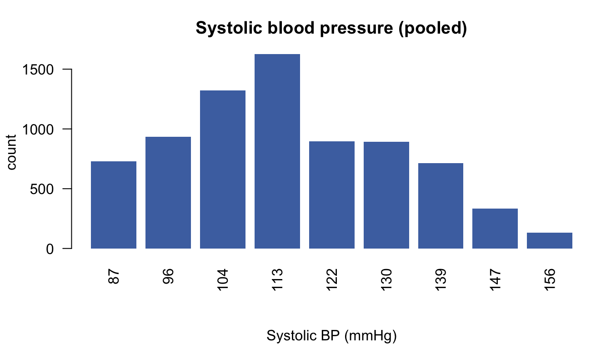

library(DSI); library(DSOpal); library(dsBaseClient); library(dsOMOPClient)
builder <- DSI::newDSLoginBuilder()
builder$append(server = "nairobi", url = "https://nairobi.datashield.live",
user = "ethiopia", password = "P@ssw0rd", profile = "omop")
builder$append(server = "douala", url = "https://douala.datashield.live",
user = "ethiopia", password = "P@ssw0rd", profile = "omop")
builder$append(server = "dakar", url = "https://dakar.datashield.live",
user = "ethiopia", password = "P@ssw0rd", profile = "omop")
conns <- DSI::datashield.login(logins = builder$build())
ds.omop.connect(resource = "omop_demo.mimic", symbol = "omop", conns = conns)dsOMOP — Exercises (Solutions)
One worked path through each exercise, with real federated output
Download the solutions (.R) Back to the exercises
These are one valid path; your concepts/variables may differ.
Exercise 1 — Find a condition
ds.omop.concept.search("hyperlipidemia", domain = "Condition",
symbol = "omop", conns = conns)#> $nairobi
#> concept_id concept_name domain_id vocabulary_id standard_concept concept_class_id concept_code valid_start_date valid_end_date invalid_reason
#> 1 432867 Hyperlipidemia Condition SNOMED S Disorder 55822004 1970-01-01 2099-12-31 <NA>
#>
#> $douala
#> concept_id concept_name domain_id vocabulary_id standard_concept concept_class_id concept_code valid_start_date valid_end_date invalid_reason
#> 1 432867 Hyperlipidemia Condition SNOMED S Disorder 55822004 1970-01-01 2099-12-31 <NA>
#>
#> $dakar
#> concept_id concept_name domain_id vocabulary_id standard_concept concept_class_id concept_code valid_start_date valid_end_date invalid_reason
#> 1 432867 Hyperlipidemia Condition SNOMED S Disorder 55822004 1970-01-01 2099-12-31 <NA>
#>
#> $pooled
#> concept_id concept_name domain_id vocabulary_id standard_concept concept_class_id concept_code valid_start_date valid_end_date invalid_reason
#> 1 432867 Hyperlipidemia Condition SNOMED S Disorder 55822004 1970-01-01 2099-12-31 <NA>prev <- ds.omop.concept.prevalence("condition_occurrence", metric = "persons",
top_n = 15, scope = "pooled", symbol = "omop", conns = conns)$pooled
prev[prev$concept_id == 432867, ]#> concept_id n_persons concept_name
#> 5 432867 45 HyperlipidemiaHyperlipidemia is concept 432867, recorded in ~45 of the ~100 patients.
Exercise 2 — A numeric measurement
ds.omop.column.stats("measurement", "value_as_number", concept_id = 21492239,
scope = "pooled", symbol = "omop", conns = conns)#> $nairobi
#> $n_total
#> [1] 3410
#>
#> $n_missing
#> [1] 0
#>
#> $n_distinct
#> [1] NA
#>
#> $n_persons
#> [1] 35
#>
#> $mean
#> [1] 115.6067
#>
#> $sd
#> [1] 19.8554
#>
#>
#> $douala
#> $n_total
#> [1] 2430
#>
#> $n_missing
#> [1] 0
#>
#> $n_distinct
#> [1] NA
#>
#> $n_persons
#> [1] 25
#>
#> $mean
#> [1] 111.3663
#>
#> $sd
#> [1] 23.0741
#>
#>
#> $dakar
#> $n_total
#> [1] 2525
#>
#> $n_missing
#> [1] 0
#>
#> $n_distinct
#> [1] NA
#>
#> $n_persons
#> [1] 40
#>
#> $mean
#> [1] 118.2428
#>
#> $sd
#> [1] 22.4881
#>
#>
#> $pooled
#> $n_total
#> [1] 8365
#>
#> $mean
#> [1] 115.1706
#>
#> $sd
#> [1] 21.79548ds.omop.value.histogram("measurement", value_col = "value_as_number", concept_id = 21492239,
nbins = 9, plot = TRUE, xlab = "Systolic BP (mmHg)",
main = "Systolic blood pressure (pooled)",
symbol = "omop", conns = conns)
Systolic BP (concept 21492239) averages ~115 mmHg with only a mild right lean — much closer to symmetric than creatinine.
Exercise 3 — Are these patients married?
ds.omop.value.counts("observation", "value_as_concept_id", concept_id = 40766231,
scope = "pooled", symbol = "omop", conns = conns)#> $nairobi
#> value n n_persons concept_name
#> 1 45881671 40 10 Never married
#> 2 45883711 25 5 Widowed
#> 3 45876756 25 10 Married
#> 4 45883375 0 0 Divorced
#>
#> $douala
#> value n n_persons concept_name
#> 1 45881671 40 5 Never married
#> 2 45876756 20 5 Married
#> 3 45883711 20 5 Widowed
#> 4 45883375 15 0 Divorced
#>
#> $dakar
#> value n n_persons concept_name
#> 1 45881671 30 15 Never married
#> 2 45876756 25 15 Married
#> 3 45883375 5 0 Divorced
#> 4 45883711 5 0 Widowed
#>
#> $pooled
#> n concept_name value
#> 1 110 Never married 45881671
#> 2 70 Married 45876756
#> 3 50 Widowed 45883711
#> 4 20 Divorced 45883375Marital status is concept 40766231; “Never married” is the most common value.
Exercise 4 — Build your own table
rec <- omop_recipe(
variables = list(
omop_variable(table = "person", column = "gender_concept_id", format = "sex_mf", name = "sex"),
omop_variable_age(name = "age", year = 2024),
omop_variable(table = "measurement", concept_id = 21492239, format = "mean", name = "systolic_bp"),
omop_variable(table = "condition_occurrence", concept_id = 432867, format = "binary", name = "hyperlipidemia")
),
output = omop_output(name = "study", type = "wide"))
recipe_execute(rec, out = c(study = "D"), symbol = "omop", conns = conns)
ds.colnames("D", datasources = conns)#> $nairobi
#> [1] "person_id" "systolic_bp" "hyperlipidemia" "sex" "age"
#>
#> $douala
#> [1] "person_id" "systolic_bp" "hyperlipidemia" "sex" "age"
#>
#> $dakar
#> [1] "person_id" "systolic_bp" "hyperlipidemia" "sex" "age"ds.dim("D", datasources = conns)#> $`dimensions of D in nairobi`
#> [1] 35 5
#>
#> $`dimensions of D in douala`
#> [1] 25 5
#>
#> $`dimensions of D in dakar`
#> [1] 40 5
#>
#> $`dimensions of D in combined studies`
#> [1] 100 5ds.summary("D$systolic_bp", datasources = conns)#> $nairobi
#> $nairobi$class
#> [1] "numeric"
#>
#> $nairobi$length
#> [1] 35
#>
#> $nairobi$`quantiles & mean`
#> 5% 10% 25% 50% 75% 90% 95% Mean
#> 99.72277 104.13354 112.25500 120.19672 128.68355 133.01607 142.95000 120.33293
#>
#>
#> $douala
#> $douala$class
#> [1] "numeric"
#>
#> $douala$length
#> [1] 25
#>
#> $douala$`quantiles & mean`
#> 5% 10% 25% 50% 75% 90% 95% Mean
#> 92.58813 97.12789 108.08743 113.52308 129.00000 142.39870 149.79907 117.76521
#>
#>
#> $dakar
#> $dakar$class
#> [1] "numeric"
#>
#> $dakar$length
#> [1] 40
#>
#> $dakar$`quantiles & mean`
#> 5% 10% 25% 50% 75% 90% 95% Mean
#> 99.96604 102.28898 108.09216 114.66629 123.30138 134.01083 144.09225 117.25996ds.table("D$hyperlipidemia", datasources = conns)#>
#> Data in all studies were valid
#>
#> Study 1 : No errors reported from this study
#> Study 2 : No errors reported from this study
#> Study 3 : No errors reported from this study#> $output.list
#> $output.list$TABLE_rvar.by.study_row.props
#> study
#> D$hyperlipidemia nairobi douala dakar
#> 0 0.3773585 0.2452830 0.3773585
#> 1 0.3191489 0.2553191 0.4255319
#> NA NaN NaN NaN
#>
#> $output.list$TABLE_rvar.by.study_col.props
#> study
#> D$hyperlipidemia nairobi douala dakar
#> 0 0.5714286 0.52 0.5
#> 1 0.4285714 0.48 0.5
#> NA 0.0000000 0.00 0.0
#>
#> $output.list$TABLE_rvar.by.study_counts
#> study
#> D$hyperlipidemia nairobi douala dakar
#> 0 20 13 20
#> 1 15 12 20
#> NA 0 0 0
#>
#> $output.list$TABLES.COMBINED_all.sources_proportions
#> D$hyperlipidemia
#> 0 1 NA
#> 0.53 0.47 0.00
#>
#> $output.list$TABLES.COMBINED_all.sources_counts
#> D$hyperlipidemia
#> 0 1 NA
#> 53 47 0
#>
#>
#> $validity.message
#> [1] "Data in all studies were valid"Exercise 5 — Filter, then model
rec_h <- omop_recipe(
variables = list(
omop_variable(table = "person", column = "gender_concept_id", format = "sex_mf", name = "sex"),
omop_variable_age(name = "age", year = 2024),
omop_variable(table = "condition_occurrence", concept_id = 432867, format = "binary", name = "hyperlipidemia")
),
filters = list(older = omop_filter_age(min = 50, year = 2024)),
output = omop_output(name = "study", type = "wide"))
recipe_execute(rec_h, out = c(study = "H"), symbol = "omop", conns = conns)
ds.dim("H", datasources = conns)#> $`dimensions of H in nairobi`
#> [1] 31 4
#>
#> $`dimensions of H in douala`
#> [1] 16 4
#>
#> $`dimensions of H in dakar`
#> [1] 35 4
#>
#> $`dimensions of H in combined studies`
#> [1] 82 4fit <- ds.glm(formula = "H$hyperlipidemia ~ H$age + H$sex", family = "binomial", datasources = conns)
fit$coefficients#> Estimate Std. Error z-value p-value low0.95CI.LP high0.95CI.LP P_OR low0.95CI.P_OR high0.95CI.P_OR
#> (Intercept) -5.48713429 1.60882182 -3.4106538 0.0006480732 -8.64036711 -2.3339015 0.004122624 0.0001767907 0.0883539
#> H$age 0.08095532 0.02331136 3.4727840 0.0005150897 0.03526589 0.1266448 1.084322452 1.0358951106 1.1350137
#> H$sexM 0.23581575 0.49379170 0.4775612 0.6329625663 -0.73199820 1.2036297 1.265941036 0.4809469992 3.3321898In the 50+ cohort, age remains a significant predictor of hyperlipidemia (
P_OR> 1, smallp-value); sex is not.
DSI::datashield.logout(conns)